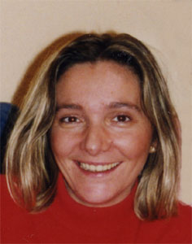

Manuela Chamorro García
Manuela Chamorro García 

 Haz clic aquí para detalles de la Familia de Manuela con Raúl González Villacián
Haz clic aquí para detalles de la Familia de Manuela con Raúl González Villacián
This page is within a frameset. View the entire genealogy report of Chamorro García families, or surname index of Chamorro García pedigrees or report summary of Chamorro García heritage from "Árbol Genealógico de Manolo y Amalia".
View a family tree from Gedcom file.
© 2006 GenoPro Inc. All Rights Reserved.